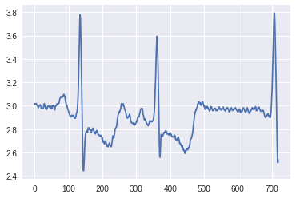
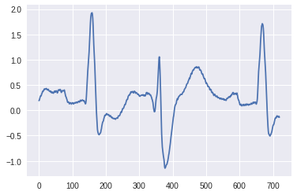
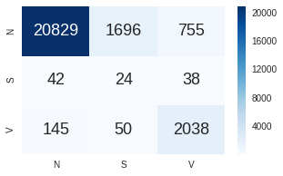
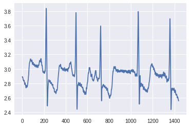
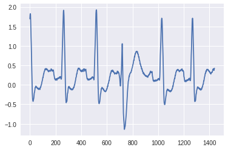
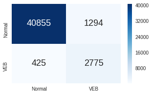

4. 実践編: ディープラーニングを使ったモニタリングデータの時系列解析¶
- 近年, 健康意識の高まり, 運動人口の増加に伴って, 活動量計などのウェアラブルデバイスが普及し始めている.
- ウェアラブルデバイスから心拍データ等の情報を取得することで,
リアルタイムに健康状態をモニタリングできる可能性がある.
- Cardiogram社とカリフォルニア大学の共同研究で、心拍センサーデータを用いて糖尿病予備群を判定する「DeepHeart」が注目を集めた
- Apple Watch Series 4には心電図作成の機能が搭載されており, ヘルスケア分野でも注目されている
- もう少し充実させる
4.1. 目次¶
- 環境構築
- 使用するデータセット
- データ前処理
- DLを用いた時系列データ解析
- 精度向上に向けて
- クラス不均衡データへの対応 1. Undersampling 1. 損失関数の変更
- 特徴抽出方法の変更 1. 入力サイズ(セグメント長) 1. ネットワーク構造
- ノイズ除去の効果検証
4.2. 環境構築¶
はじめに, 下記の必要ライブラリをインストールします.
- Cupy
- Chainer
- Scipy
- Matplotlib
- Seaborn
- Pandas
- WFDB
- Scikit-learn
- Imbalanced-learn
以下のセルを実行 (Shift + Enter) して下さい.
In [ ]:
!set -ex
!apt -y -q install cuda-libraries-dev-9-2
!pip install cupy-cuda92==5.0.0
!pip install chainer==5.0.0
!pip install scipy matplotlib seaborn pandas wfdb
!pip install imbalanced-learn
Reading package lists...
Building dependency tree...
Reading state information...
The following additional packages will be installed:
cuda-cublas-dev-9-2 cuda-cufft-dev-9-2 cuda-curand-dev-9-2
cuda-cusolver-dev-9-2 cuda-cusparse-dev-9-2 cuda-npp-dev-9-2
cuda-nvgraph-dev-9-2 cuda-nvrtc-dev-9-2
The following NEW packages will be installed:
cuda-cublas-dev-9-2 cuda-cufft-dev-9-2 cuda-curand-dev-9-2
cuda-cusolver-dev-9-2 cuda-cusparse-dev-9-2 cuda-libraries-dev-9-2
cuda-npp-dev-9-2 cuda-nvgraph-dev-9-2 cuda-nvrtc-dev-9-2
0 upgraded, 9 newly installed, 0 to remove and 3 not upgraded.
Need to get 332 MB of archives.
After this operation, 972 MB of additional disk space will be used.
Get:1 https://developer.download.nvidia.com/compute/cuda/repos/ubuntu1710/x86_64 cuda-cublas-dev-9-2 9.2.148.1-1 [50.4 MB]
Get:2 https://developer.download.nvidia.com/compute/cuda/repos/ubuntu1710/x86_64 cuda-cufft-dev-9-2 9.2.148-1 [106 MB]
Get:3 https://developer.download.nvidia.com/compute/cuda/repos/ubuntu1710/x86_64 cuda-curand-dev-9-2 9.2.148-1 [57.8 MB]
Get:4 https://developer.download.nvidia.com/compute/cuda/repos/ubuntu1710/x86_64 cuda-cusolver-dev-9-2 9.2.148-1 [8,184 kB]
Get:5 https://developer.download.nvidia.com/compute/cuda/repos/ubuntu1710/x86_64 cuda-cusparse-dev-9-2 9.2.148-1 [27.8 MB]
Get:6 https://developer.download.nvidia.com/compute/cuda/repos/ubuntu1710/x86_64 cuda-nvrtc-dev-9-2 9.2.148-1 [9,348 B]
Get:7 https://developer.download.nvidia.com/compute/cuda/repos/ubuntu1710/x86_64 cuda-nvgraph-dev-9-2 9.2.148-1 [30.1 MB]
Get:8 https://developer.download.nvidia.com/compute/cuda/repos/ubuntu1710/x86_64 cuda-npp-dev-9-2 9.2.148-1 [52.0 MB]
Get:9 https://developer.download.nvidia.com/compute/cuda/repos/ubuntu1710/x86_64 cuda-libraries-dev-9-2 9.2.148-1 [2,598 B]
Fetched 332 MB in 6s (51.5 MB/s)
Selecting previously unselected package cuda-cublas-dev-9-2.
(Reading database ... 22280 files and directories currently installed.)
Preparing to unpack .../0-cuda-cublas-dev-9-2_9.2.148.1-1_amd64.deb ...
Unpacking cuda-cublas-dev-9-2 (9.2.148.1-1) ...
Selecting previously unselected package cuda-cufft-dev-9-2.
Preparing to unpack .../1-cuda-cufft-dev-9-2_9.2.148-1_amd64.deb ...
Unpacking cuda-cufft-dev-9-2 (9.2.148-1) ...
Selecting previously unselected package cuda-curand-dev-9-2.
Preparing to unpack .../2-cuda-curand-dev-9-2_9.2.148-1_amd64.deb ...
Unpacking cuda-curand-dev-9-2 (9.2.148-1) ...
Selecting previously unselected package cuda-cusolver-dev-9-2.
Preparing to unpack .../3-cuda-cusolver-dev-9-2_9.2.148-1_amd64.deb ...
Unpacking cuda-cusolver-dev-9-2 (9.2.148-1) ...
Selecting previously unselected package cuda-cusparse-dev-9-2.
Preparing to unpack .../4-cuda-cusparse-dev-9-2_9.2.148-1_amd64.deb ...
Unpacking cuda-cusparse-dev-9-2 (9.2.148-1) ...
Selecting previously unselected package cuda-nvrtc-dev-9-2.
Preparing to unpack .../5-cuda-nvrtc-dev-9-2_9.2.148-1_amd64.deb ...
Unpacking cuda-nvrtc-dev-9-2 (9.2.148-1) ...
Selecting previously unselected package cuda-nvgraph-dev-9-2.
Preparing to unpack .../6-cuda-nvgraph-dev-9-2_9.2.148-1_amd64.deb ...
Unpacking cuda-nvgraph-dev-9-2 (9.2.148-1) ...
Selecting previously unselected package cuda-npp-dev-9-2.
Preparing to unpack .../7-cuda-npp-dev-9-2_9.2.148-1_amd64.deb ...
Unpacking cuda-npp-dev-9-2 (9.2.148-1) ...
Selecting previously unselected package cuda-libraries-dev-9-2.
Preparing to unpack .../8-cuda-libraries-dev-9-2_9.2.148-1_amd64.deb ...
Unpacking cuda-libraries-dev-9-2 (9.2.148-1) ...
Setting up cuda-npp-dev-9-2 (9.2.148-1) ...
Setting up cuda-curand-dev-9-2 (9.2.148-1) ...
Setting up cuda-nvrtc-dev-9-2 (9.2.148-1) ...
Setting up cuda-cusolver-dev-9-2 (9.2.148-1) ...
Setting up cuda-cufft-dev-9-2 (9.2.148-1) ...
Setting up cuda-cusparse-dev-9-2 (9.2.148-1) ...
Setting up cuda-cublas-dev-9-2 (9.2.148.1-1) ...
Setting up cuda-nvgraph-dev-9-2 (9.2.148-1) ...
Setting up cuda-libraries-dev-9-2 (9.2.148-1) ...
Collecting cupy-cuda92==5.0.0
Downloading https://files.pythonhosted.org/packages/23/79/da48a3e32468fff1f4913cf81d403c29e00b09c4c0d5f09d288e7b1483e8/cupy_cuda92-5.0.0-cp36-cp36m-manylinux1_x86_64.whl (261.1MB)
100% |████████████████████████████████| 261.1MB 78kB/s
Requirement already satisfied: numpy>=1.9.0 in /usr/local/lib/python3.6/dist-packages (from cupy-cuda92==5.0.0) (1.14.6)
Collecting fastrlock>=0.3 (from cupy-cuda92==5.0.0)
Downloading https://files.pythonhosted.org/packages/b5/93/a7efbd39eac46c137500b37570c31dedc2d31a8ff4949fcb90bda5bc5f16/fastrlock-0.4-cp36-cp36m-manylinux1_x86_64.whl
Requirement already satisfied: six>=1.9.0 in /usr/local/lib/python3.6/dist-packages (from cupy-cuda92==5.0.0) (1.11.0)
Installing collected packages: fastrlock, cupy-cuda92
Successfully installed cupy-cuda92-5.0.0 fastrlock-0.4
Collecting chainer==5.0.0
Downloading https://files.pythonhosted.org/packages/bd/34/be31d10ff7f6a9452025866a6d515e1fbc877ff2ee68d9c7197c75f15797/chainer-5.0.0.tar.gz (510kB)
100% |████████████████████████████████| 512kB 8.1MB/s
Requirement already satisfied: filelock in /usr/local/lib/python3.6/dist-packages (from chainer==5.0.0) (3.0.10)
Requirement already satisfied: numpy>=1.9.0 in /usr/local/lib/python3.6/dist-packages (from chainer==5.0.0) (1.14.6)
Requirement already satisfied: protobuf>=3.0.0 in /usr/local/lib/python3.6/dist-packages (from chainer==5.0.0) (3.6.1)
Requirement already satisfied: six>=1.9.0 in /usr/local/lib/python3.6/dist-packages (from chainer==5.0.0) (1.11.0)
Requirement already satisfied: cupy-cuda92<6.0.0,>=5.0.0 in /usr/local/lib/python3.6/dist-packages (from chainer==5.0.0) (5.0.0)
Requirement already satisfied: setuptools in /usr/local/lib/python3.6/dist-packages (from protobuf>=3.0.0->chainer==5.0.0) (40.5.0)
Requirement already satisfied: fastrlock>=0.3 in /usr/local/lib/python3.6/dist-packages (from cupy-cuda92<6.0.0,>=5.0.0->chainer==5.0.0) (0.4)
Building wheels for collected packages: chainer
Running setup.py bdist_wheel for chainer ... - \ | / - \ done
Stored in directory: /root/.cache/pip/wheels/96/85/2e/623d0d0f08db6eb8d75cdb89c094674c98e2304ff5d98528aa
Successfully built chainer
Installing collected packages: chainer
Successfully installed chainer-5.0.0
Requirement already satisfied: scipy in /usr/local/lib/python3.6/dist-packages (0.19.1)
Requirement already satisfied: matplotlib in /usr/local/lib/python3.6/dist-packages (2.1.2)
Requirement already satisfied: seaborn in /usr/local/lib/python3.6/dist-packages (0.7.1)
Requirement already satisfied: pandas in /usr/local/lib/python3.6/dist-packages (0.22.0)
Collecting wfdb
Downloading https://files.pythonhosted.org/packages/b2/96/c2200539fdf4f087e14d30ed62a66544b6f441196bcb8ecc7a29ec6503b9/wfdb-2.2.1.tar.gz (94kB)
100% |████████████████████████████████| 102kB 4.7MB/s
Requirement already satisfied: numpy>=1.8.2 in /usr/local/lib/python3.6/dist-packages (from scipy) (1.14.6)
Requirement already satisfied: cycler>=0.10 in /usr/local/lib/python3.6/dist-packages (from matplotlib) (0.10.0)
Requirement already satisfied: six>=1.10 in /usr/local/lib/python3.6/dist-packages (from matplotlib) (1.11.0)
Requirement already satisfied: pyparsing!=2.0.4,!=2.1.2,!=2.1.6,>=2.0.1 in /usr/local/lib/python3.6/dist-packages (from matplotlib) (2.3.0)
Requirement already satisfied: python-dateutil>=2.1 in /usr/local/lib/python3.6/dist-packages (from matplotlib) (2.5.3)
Requirement already satisfied: pytz in /usr/local/lib/python3.6/dist-packages (from matplotlib) (2018.7)
Collecting nose>=1.3.7 (from wfdb)
Downloading https://files.pythonhosted.org/packages/15/d8/dd071918c040f50fa1cf80da16423af51ff8ce4a0f2399b7bf8de45ac3d9/nose-1.3.7-py3-none-any.whl (154kB)
100% |████████████████████████████████| 163kB 7.5MB/s
Requirement already satisfied: requests>=2.10.0 in /usr/local/lib/python3.6/dist-packages (from wfdb) (2.18.4)
Collecting sklearn>=0.0 (from wfdb)
Downloading https://files.pythonhosted.org/packages/1e/7a/dbb3be0ce9bd5c8b7e3d87328e79063f8b263b2b1bfa4774cb1147bfcd3f/sklearn-0.0.tar.gz
Requirement already satisfied: idna<2.7,>=2.5 in /usr/local/lib/python3.6/dist-packages (from requests>=2.10.0->wfdb) (2.6)
Requirement already satisfied: certifi>=2017.4.17 in /usr/local/lib/python3.6/dist-packages (from requests>=2.10.0->wfdb) (2018.10.15)
Requirement already satisfied: chardet<3.1.0,>=3.0.2 in /usr/local/lib/python3.6/dist-packages (from requests>=2.10.0->wfdb) (3.0.4)
Requirement already satisfied: urllib3<1.23,>=1.21.1 in /usr/local/lib/python3.6/dist-packages (from requests>=2.10.0->wfdb) (1.22)
Requirement already satisfied: scikit-learn in /usr/local/lib/python3.6/dist-packages (from sklearn>=0.0->wfdb) (0.19.2)
Building wheels for collected packages: wfdb, sklearn
Running setup.py bdist_wheel for wfdb ... - \ done
Stored in directory: /root/.cache/pip/wheels/bb/a9/00/0078d26b0c15b31be0001af8eb659496709c361c69641303f1
Running setup.py bdist_wheel for sklearn ... - done
Stored in directory: /root/.cache/pip/wheels/76/03/bb/589d421d27431bcd2c6da284d5f2286c8e3b2ea3cf1594c074
Successfully built wfdb sklearn
Installing collected packages: nose, sklearn, wfdb
Successfully installed nose-1.3.7 sklearn-0.0 wfdb-2.2.1
Collecting imbalanced-learn
Downloading https://files.pythonhosted.org/packages/c5/ea/f027ceb21114abe8189a2804640b2d5dd49a7a271c4814695482c5bc94d8/imbalanced_learn-0.4.2-py3-none-any.whl (166kB)
100% |████████████████████████████████| 174kB 7.6MB/s
Requirement already satisfied: numpy>=1.8.2 in /usr/local/lib/python3.6/dist-packages (from imbalanced-learn) (1.14.6)
Requirement already satisfied: scipy>=0.13.3 in /usr/local/lib/python3.6/dist-packages (from imbalanced-learn) (0.19.1)
Collecting scikit-learn>=0.20 (from imbalanced-learn)
Downloading https://files.pythonhosted.org/packages/0c/b2/05be9b6da9ae4a4c54f537be22e95833f722742a02b1e355fdc09363877c/scikit_learn-0.20.0-cp36-cp36m-manylinux1_x86_64.whl (5.3MB)
100% |████████████████████████████████| 5.3MB 7.1MB/s
Installing collected packages: scikit-learn, imbalanced-learn
Found existing installation: scikit-learn 0.19.2
Uninstalling scikit-learn-0.19.2:
Successfully uninstalled scikit-learn-0.19.2
Successfully installed imbalanced-learn-0.4.2 scikit-learn-0.20.0
インストールが完了したら, 以下のセルを実行して, 各ライブラリのインポート、及びバージョン確認を行って下さい.
In [ ]:
import os
import random
import numpy as np
import cupy
import chainer
import scipy
import pandas as pd
import matplotlib
import seaborn as sn
import wfdb
import sklearn
import imblearn
chainer.print_runtime_info()
print(sklearn.__version__)
print(imblearn.__version__)
Platform: Linux-4.14.65+-x86_64-with-Ubuntu-18.04-bionic
Chainer: 5.0.0
NumPy: 1.14.6
CuPy:
CuPy Version : 5.0.0
CUDA Root : /usr/local/cuda
CUDA Build Version : 9020
CUDA Driver Version : 9020
CUDA Runtime Version : 9020
cuDNN Build Version : 7201
cuDNN Version : 7201
NCCL Build Version : 2213
iDeep: Not Available
0.20.0
0.4.2
4.3. 使用するデータセット¶
今回は、ECGデータとして有名なMIT-BIH Arrhythmia Databaseを使用します. - TODO: 説明 - MIT-BIH DBについて - TODO: 説明 - python-wfdbを用いてデータをダウンロード
In [ ]:
dataset_root = './'
download_dir = os.path.join(dataset_root, 'download')
※エラーが出た際は, 再度実行して下さい. ↓
In [ ]:
wfdb.dl_database('mitdb', dl_dir=download_dir)
Created local base download directory: ./download
Downloading files...
Finished downloading files
- TODO: 各データの拡張子にについて軽く触れる
In [ ]:
print(sorted(os.listdir(download_dir)))
['100.atr', '100.dat', '100.hea', '101.atr', '101.dat', '101.hea', '102.atr', '102.dat', '102.hea', '103.atr', '103.dat', '103.hea', '104.atr', '104.dat', '104.hea', '105.atr', '105.dat', '105.hea', '106.atr', '106.dat', '106.hea', '107.atr', '107.dat', '107.hea', '108.atr', '108.dat', '108.hea', '109.atr', '109.dat', '109.hea', '111.atr', '111.dat', '111.hea', '112.atr', '112.dat', '112.hea', '113.atr', '113.dat', '113.hea', '114.atr', '114.dat', '114.hea', '115.atr', '115.dat', '115.hea', '116.atr', '116.dat', '116.hea', '117.atr', '117.dat', '117.hea', '118.atr', '118.dat', '118.hea', '119.atr', '119.dat', '119.hea', '121.atr', '121.dat', '121.hea', '122.atr', '122.dat', '122.hea', '123.atr', '123.dat', '123.hea', '124.atr', '124.dat', '124.hea', '200.atr', '200.dat', '200.hea', '201.atr', '201.dat', '201.hea', '202.atr', '202.dat', '202.hea', '203.atr', '203.dat', '203.hea', '205.atr', '205.dat', '205.hea', '207.atr', '207.dat', '207.hea', '208.atr', '208.dat', '208.hea', '209.atr', '209.dat', '209.hea', '210.atr', '210.dat', '210.hea', '212.atr', '212.dat', '212.hea', '213.atr', '213.dat', '213.hea', '214.atr', '214.dat', '214.hea', '215.atr', '215.dat', '215.hea', '217.atr', '217.dat', '217.hea', '219.atr', '219.dat', '219.hea', '220.atr', '220.dat', '220.hea', '221.atr', '221.dat', '221.hea', '222.atr', '222.dat', '222.hea', '223.atr', '223.dat', '223.hea', '228.atr', '228.dat', '228.hea', '230.atr', '230.dat', '230.hea', '231.atr', '231.dat', '231.hea', '232.atr', '232.dat', '232.hea', '233.atr', '233.dat', '233.hea', '234.atr', '234.dat', '234.hea']
4.4. データ前処理¶
- TODO: 説明 - ベーシックな前処理として、以下の処理を行う
- レコードIDを train/validation/testに分割
- 波形ファイル(.dat) & アノテーションファイル(.atr)の読み込み (一部, 利用しないデータがある)
- 10種以上の細分化されたラベルが付与されているが, 先行研究に従って3クラスに集約する
- 波形データの正規化
- 2秒間の部分波形(segment)に分割. 中央のピークに付与されているラベルを, その部分波形のラベルとして扱う
In [ ]:
class BaseECGDatasetPreprocessor(object):
def __init__(
self,
dataset_root='./',
window_size=720, # 2 seconds
random_state=45
):
self.dataset_root = dataset_root
self.download_dir = os.path.join(self.dataset_root, 'download')
self.window_size = window_size
self.sample_rate = 360.
self.random_state = random_state
self.record_list = [
'100', '101', '103', '105', '106', '108', '109',
'111', '112', '113', '115', '116', '117', '118',
'119', '121', '122', '123', '124', '200', '201',
'203', '205', '207', '208', '209', '210', '212',
'213', '214', '215', '219', '220', '221', '222',
'223', '228', '230', '231', '232', '233', '234'
]
# split data
self.split_record_lists = self.split_records()
# annotation
self.labels = ['N', 'S', 'V']
self.valid_symbols = ['N', 'L', 'R', 'e', 'j', 'A', 'a', 'J', 'S', 'V', 'E']
self.label_map = {
'N': 'N', 'L': 'N', 'R': 'N', 'e': 'N', 'j': 'N',
'A': 'S', 'a': 'S', 'J': 'S', 'S': 'S',
'V': 'V', 'E': 'V'
}
def load_data(
self,
base_record,
channel=0 # [0, 1]
):
record_name = os.path.join(self.download_dir, str(base_record))
# read dat file
signals, fields = wfdb.rdsamp(record_name)
assert fields['fs'] == self.sample_rate
# read annotation file
annotation = wfdb.rdann(record_name, 'atr')
symbols = annotation.symbol
positions = annotation.sample
return signals[:, channel], symbols, positions
def normalize_signal(
self,
signal,
method='std'
):
if method == 'minmax':
min_val = np.min(signal)
max_val = np.max(signal)
return (signal - min_val) / (max_val - min_val)
elif method == 'std':
signal -= np.mean(signal) / np.std(signal)
return signal
else:
raise ValueError("Invalid value: {}".format(method))
def create_data_slices(
self,
signal,
symbols,
positions
):
X = []
y = []
sig_len = len(signal)
for i in range(len(symbols)):
start = positions[i] - self.window_size // 2
end = positions[i] + self.window_size // 2
if symbols[i] in self.valid_symbols and start >= 0 and end <= sig_len:
segment = signal[start:end]
assert len(segment) == self.window_size, "Invalid length"
X.append(segment)
y.append(self.labels.index(self.label_map[symbols[i]]))
return np.array(X), np.array(y)
def split_records(self):
# copy list
lst = list(self.record_list)
# random shuffle
random.seed(self.random_state)
random.shuffle(lst)
# split list
record_len = len(lst)
train_idx = int(record_len * 0.5)
val_idx = int(record_len * 0.75)
train_record_list = sorted(lst[:train_idx])
validation_record_list = sorted(lst[train_idx:val_idx])
test_record_list = sorted(lst[val_idx:])
return train_record_list, validation_record_list, test_record_list
def prepare_dataset(
self,
normalize=True
):
if not os.path.isdir(self.download_dir):
self.download_data()
train_records, validation_records, test_records = self.split_record_lists
# prepare training dataset
self._prepare_dataset_core(train_records, "train", normalize)
# prepare validation dataset
self._prepare_dataset_core(validation_records, "validation", normalize)
# prepare test dataset
self._prepare_dataset_core(test_records, "test", normalize)
def _prepare_dataset_core(
self,
record_list,
mode="train",
normalize=True
):
X, y = None, None
for i in range(len(record_list)):
signal, symbols, positions = self.load_data(record_list[i])
if normalize:
signal = self.normalize_signal(signal)
if i == 0:
X, y = self.create_data_slices(signal, symbols, positions)
else:
X_tmp, y_tmp = self.create_data_slices(signal, symbols, positions)
X = np.vstack((X, X_tmp))
y = np.concatenate((y, y_tmp))
os.makedirs(os.path.join(self.dataset_root, mode), exist_ok=True)
np.save(os.path.join(self.dataset_root, mode, "X.npy"), X)
np.save(os.path.join(self.dataset_root, mode, "y.npy"), y)
- TODO: 説明 - prepare_dataset()を実行すると, train/validation/testデータに分割され, 対応するディレクトリ内に格納される
In [ ]:
preprocessor = BaseECGDatasetPreprocessor(dataset_root)
In [ ]:
preprocessor.prepare_dataset()
- TODO: 説明 - train/validation のデータの中身を確認する
In [ ]:
X_train = np.load(os.path.join(dataset_root, 'train', 'X.npy'))
y_train = np.load(os.path.join(dataset_root, 'train', 'y.npy'))
X_val = np.load(os.path.join(dataset_root, 'validation', 'X.npy'))
y_val = np.load(os.path.join(dataset_root, 'validation', 'y.npy'))
X_test = np.load(os.path.join(dataset_root, 'test', 'X.npy'))
y_test = np.load(os.path.join(dataset_root, 'test', 'y.npy'))
In [ ]:
print("X_train.shape = ", X_train.shape, "\ty_train.shape = ", y_train.shape)
print("X_val.shape = ", X_val.shape, "\ty_val.shape = ", y_val.shape)
print("X_test.shape = ", X_test.shape, "\ty_test.shape = ", y_test.shape)
X_train.shape = (48092, 720) y_train.shape = (48092,)
X_val.shape = (22091, 720) y_val.shape = (22091,)
X_test.shape = (25617, 720) y_test.shape = (25617,)
In [ ]:
uniq_train, counts_train = np.unique(y_train, return_counts=True)
print("y_train count each labels: ", dict(zip(uniq_train, counts_train)))
y_train count each labels: {0: 42771, 1: 1678, 2: 3643}
In [ ]:
uniq_val, counts_val = np.unique(y_val, return_counts=True)
print("y_val count each labels: ", dict(zip(uniq_val, counts_val)))
y_val count each labels: {0: 20093, 1: 931, 2: 1067}
In [ ]:
uniq_test, counts_test = np.unique(y_test, return_counts=True)
print("y_test count each labels: ", dict(zip(uniq_test, counts_test)))
y_test count each labels: {0: 23280, 1: 104, 2: 2233}
- TODO: 説明 - 波形データを可視化してみる
In [ ]:
%matplotlib inline
import matplotlib.pyplot as plt
In [ ]:
idx_n = np.where(y_train == 0)[0]
plt.plot(X_train[idx_n[0]])
[<matplotlib.lines.Line2D at 0x7f48497690b8>]

In [ ]:
idx_s = np.where(y_train == 1)[0]
plt.plot(X_train[idx_s[0]])
[<matplotlib.lines.Line2D at 0x7f4846ef7b70>]

In [ ]:
idx_v = np.where(y_train == 2)[0]
plt.plot(X_train[idx_v[1]])
[<matplotlib.lines.Line2D at 0x7f4846e6f048>]

4.5. DLを用いた時系列データ解析¶
- TODO: 説明 - 3種類のクラス(“N”, “S”, “V”)を正しく識別するモデルを構築する
- TODO: 説明 - chainerデータセットクラス
In [ ]:
class ECGDataset(chainer.dataset.DatasetMixin):
def __init__(
self,
path
):
if os.path.isfile(os.path.join(path, 'X.npy')):
self.X = np.load(os.path.join(path, 'X.npy'))
else:
raise FileNotFoundError("{}/X.npy not found.".format(path))
if os.path.isfile(os.path.join(path, 'y.npy')):
self.y = np.load(os.path.join(path, 'y.npy'))
else:
raise FileNotFoundError("{}/y.npy not found.".format(path))
assert len(self.X) == len(self.y), "len(signal): {} != len(annotation): {}".format(len(self.X), len(self.y))
def __len__(self):
return len(self.X)
def get_example(self, i):
return self.X[None, i].astype(np.float32), self.y[i]
- TODO: 説明 - CNNモデル(ResNet構造)
In [ ]:
import chainer.functions as F
import chainer.links as L
from chainer import reporter
from chainer import Variable
class ResBlock(chainer.Chain):
def __init__(self):
super(ResBlock, self).__init__()
with self.init_scope():
self.c1 = L.ConvolutionND(1, None, 32, ksize=5, pad=2)
self.c2 = L.ConvolutionND(1, None, 32, ksize=5, pad=2)
def __call__(self, x):
h = F.relu(self.c1(x))
h = x + self.c2(h)
h = F.max_pooling_nd(F.relu(h), ksize=5, stride=2)
return h
class ArrhythmiaNet(chainer.Chain):
def __init__(
self,
n_resblock=5
):
self.n_resblock = n_resblock
super(ArrhythmiaNet, self).__init__()
with self.init_scope():
self.conv = L.ConvolutionND(1, None, 32, ksize=5, pad=2)
for i in range(n_resblock):
resblock = ResBlock()
setattr(self, 'res{}'.format(str(i)), resblock)
self.fc1 = L.Linear(None, 32)
self.fc2 = L.Linear(32, 3)
def __call__(self, x):
h = self.conv(x)
for i in range(self.n_resblock):
h = getattr(self, 'res{}'.format(str(i)))(h)
h = F.relu(self.fc1(h))
h = self.fc2(h)
return h
class Classifier(chainer.Chain):
def __init__(
self,
predictor,
lossfun=F.softmax_cross_entropy
):
super(Classifier, self).__init__()
with self.init_scope():
self.predictor = predictor
self.lossfun = lossfun
def __call__(self, *args):
assert len(args) >= 2
x = args[:-1]
t = args[-1]
y = self.predictor(*x)
# loss
loss = self.lossfun(y, t)
with chainer.no_backprop_mode():
# other metrics
accuracy = F.accuracy(y, t)
precision = F.precision(y, t, label_num=3)[0]
recall = F.recall(y, t, label_num=3)[0]
# reporter
reporter.report({'loss': loss}, self)
reporter.report({'accuracy': accuracy}, self)
return loss
def predict(self, x):
with chainer.function.no_backprop_mode(), chainer.using_config('train', False):
x = Variable(self.xp.asarray(x, dtype=self.xp.float32))
y = self.predictor(x)
return y
- TODO: 説明 - DatasetオブジェクトとTrainerオブジェクトを作成
In [ ]:
from chainer import optimizers
from chainer.iterators import MultiprocessIterator
from chainer import training
from chainer.training import extensions
from chainer.training import triggers
from chainer.backends.cuda import get_device_from_id
def create_datasets(root_path):
train_path = os.path.join(root_path, "train")
validation_path = os.path.join(root_path, "validation")
train_dataset = ECGDataset(train_path)
validation_dataset = ECGDataset(validation_path)
return train_dataset, validation_dataset
def create_trainer(batchsize, train_dataset, validation_dataset, device=0, lossfun=F.softmax_cross_entropy):
# setup model
model = ArrhythmiaNet()
train_model = Classifier(model, lossfun=lossfun)
# use Adam optimizer
optimizer = optimizers.Adam(alpha=0.001, beta1=0.9, beta2=0.999)
optimizer.setup(train_model)
# setup iterator
train_iter = MultiprocessIterator(train_dataset, batchsize)
val_iter = MultiprocessIterator(validation_dataset, batchsize, repeat=False, shuffle=False)
# define updater
updater = training.StandardUpdater(train_iter, optimizer, device=device)
# set EarlyStoppingTrigger
stop_trigger = triggers.EarlyStoppingTrigger(
check_trigger=(2000 // batchsize, 'iteration'),
patients=3,
monitor='val/main/loss',
max_trigger=(2, 'epoch')
)
# setup trainer
trainer = training.trainer.Trainer(updater, stop_trigger)
logging_attributes = [
'epoch', 'iteration',
'main/loss', 'main/accuracy',
'val/main/loss', 'val/main/accuracy'
]
trainer.extend(
extensions.LogReport(logging_attributes, trigger=(1000 // batchsize, 'iteration'))
)
trainer.extend(
extensions.PrintReport(logging_attributes)
)
trainer.extend(
extensions.ExponentialShift('alpha', 0.75, optimizer=optimizer),
trigger=(4000 // batchsize, 'iteration')
)
trainer.extend(
extensions.Evaluator(val_iter, optimizer.target, device=device),
trigger=(2000 // batchsize, 'iteration'),
name='val'
)
return trainer
In [ ]:
train_dataset, validation_dataset = create_datasets(dataset_root)
In [ ]:
trainer = create_trainer(200, train_dataset, validation_dataset, 0)
それでは学習を開始しましょう.
In [ ]:
trainer.run()
epoch iteration main/loss main/accuracy val/main/loss val/main/accuracy
0 5 1.66869 0.666
0 10 0.418484 0.881 0.446358 0.914091
0 15 0.344883 0.884
0 20 0.259455 0.913 0.345663 0.923397
0 25 0.235039 0.943
0 30 0.169922 0.957 0.311444 0.91483
0 35 0.170684 0.948
0 40 0.204708 0.945 0.330687 0.899343
0 45 0.171482 0.945
0 50 0.120506 0.965 0.316404 0.906676
- TODO: 説明文 - 学習結果を評価します
In [ ]:
from chainer import cuda
from sklearn.metrics import classification_report
from sklearn.metrics import accuracy_score
from sklearn.metrics import confusion_matrix
def create_test_dataset(root_path):
test_path = os.path.join(root_path, "test")
test_dataset = ECGDataset(test_path)
return test_dataset
def evaluate(trainer, test_dataset, device=-1):
model = trainer.updater.get_optimizer('main').target
preds = []
for i in range(len(test_dataset)):
X, t = test_dataset.get_example(i)
X = cuda.to_gpu(X[None, ...], device)
y = model.predict(X)
y = np.asscalar(cuda.to_cpu(y.data.argmax(axis=1)[0]))
preds.append((y, t))
pred_labels, gt_labels = zip(*preds)
return list(pred_labels), list(gt_labels)
def print_confusion_matrix(y_true, y_pred):
labels = sorted(list(set(y_true)))
target_names = ['N', 'S', 'V']
cmx = confusion_matrix(y_true, y_pred, labels=labels)
df_cmx = pd.DataFrame(cmx, index=target_names, columns=target_names)
plt.figure(figsize = (5,3))
sn.heatmap(df_cmx, annot=True, annot_kws={"size": 18}, fmt="d", cmap='Blues')
plt.show()
def print_scores(gt_labels, pred_labels):
target_names = ['N', 'S', 'V']
print(classification_report(gt_labels, pred_labels, target_names=target_names))
print("accuracy: ", accuracy_score(gt_labels, pred_labels))
In [ ]:
test_dataset = create_test_dataset(dataset_root)
- TODO: 説明 - validationセットの評価
In [ ]:
pred_labels_val, gt_labels_val = evaluate(trainer, validation_dataset, 0)
In [ ]:
print_confusion_matrix(gt_labels_val, pred_labels_val)

In [ ]:
print_scores(gt_labels_val, pred_labels_val)
precision recall f1-score support
N 0.94 0.97 0.96 20093
S 0.00 0.00 0.00 931
V 0.38 0.49 0.43 1067
micro avg 0.91 0.91 0.91 22091
macro avg 0.44 0.49 0.46 22091
weighted avg 0.87 0.91 0.89 22091
accuracy: 0.906432483816939
/usr/local/lib/python3.6/dist-packages/sklearn/metrics/classification.py:1143: UndefinedMetricWarning: Precision and F-score are ill-defined and being set to 0.0 in labels with no predicted samples.
'precision', 'predicted', average, warn_for)
- TODO: 説明文 - テストセットの評価
In [ ]:
pred_labels_test, gt_labels_test = evaluate(trainer, test_dataset, 0)
In [ ]:
print_confusion_matrix(gt_labels_test, pred_labels_test)

In [ ]:
print_scores(gt_labels_test, pred_labels_test)
precision recall f1-score support
N 0.98 0.99 0.98 23280
S 0.00 0.00 0.00 104
V 0.85 0.83 0.84 2233
micro avg 0.97 0.97 0.97 25617
macro avg 0.61 0.61 0.61 25617
weighted avg 0.97 0.97 0.97 25617
accuracy: 0.9695124331498615
/usr/local/lib/python3.6/dist-packages/sklearn/metrics/classification.py:1143: UndefinedMetricWarning: Precision and F-score are ill-defined and being set to 0.0 in labels with no predicted samples.
'precision', 'predicted', average, warn_for)
4.6. 精度向上に向けて¶
4.6.1. クラス不均衡データへの対応¶
- 予測スコア(Accuracy)は高かったが、単に全てのデータを’N’と予測してもValidationで90.95%、Testで90.88%の精度が出ることになる.
- クラス不均衡なデータで学習させると、大多数を占めるラベルに予測結果が偏ってしまう傾向にある => S、Vに対する予測精度が低い理由
- こうした不均衡データの問題を解消するための方法として代表的な方法が幾つかあある
- Undersampling / Oversampling
- 損失関数の変更
4.6.1.1. Undersampling¶
In [ ]:
from imblearn.datasets import make_imbalance
class UndersampledECGDataset(ECGDataset):
def __init__(
self,
path
):
super(UndersampledECGDataset, self).__init__(path)
self.X, self.y = make_imbalance(
self.X, self.y,
sampling_strategy={0: 4500, 1: 1500, 2: 3000}
)
def create_undersampled_datasets(root_path):
train_path = os.path.join(root_path, "train")
validation_path = os.path.join(root_path, "validation")
train_dataset = UndersampledECGDataset(train_path)
validation_dataset = ECGDataset(validation_path)
return train_dataset, validation_dataset
In [ ]:
train_data, validation_data = create_undersampled_datasets(dataset_root)
In [ ]:
trainer = create_trainer(200, train_dataset, validation_dataset, 0)
In [ ]:
trainer.run()
epoch iteration main/loss main/accuracy val/main/loss val/main/accuracy
0 5 0.604399 0.87
0 10 0.341033 0.913 0.343024 0.910137
0 15 0.249193 0.913
0 20 0.176883 0.944 0.289822 0.906694
0 25 0.201716 0.934
0 30 0.107711 0.966 0.264165 0.910487
0 35 0.189832 0.949
0 40 0.153517 0.953 0.241996 0.907018
0 45 0.115196 0.964
0 50 0.128279 0.952 0.281832 0.88464
0 55 0.0920103 0.958
0 60 0.0989351 0.96 0.299443 0.876171
0 65 0.0758651 0.967
0 70 0.0893559 0.961 0.365259 0.864865
In [ ]:
pred_labels_val, gt_labels_val = evaluate(trainer, validation_dataset, 0)
In [ ]:
print_confusion_matrix(gt_labels_val, pred_labels_val)

In [ ]:
print_scores(gt_labels_val, pred_labels_val)
precision recall f1-score support
N 0.98 0.89 0.93 20093
S 0.40 0.48 0.43 931
V 0.28 0.68 0.39 1067
micro avg 0.86 0.86 0.86 22091
macro avg 0.55 0.68 0.59 22091
weighted avg 0.92 0.86 0.89 22091
accuracy: 0.8641980897197954
In [ ]:
pred_labels_test, gt_labels_test = evaluate(trainer, test_dataset, 0)
In [ ]:
print_confusion_matrix(gt_labels_test, pred_labels_test)

In [ ]:
print_scores(gt_labels_test, pred_labels_test)
precision recall f1-score support
N 0.99 0.89 0.94 23280
S 0.01 0.23 0.03 104
V 0.72 0.91 0.80 2233
micro avg 0.89 0.89 0.89 25617
macro avg 0.57 0.68 0.59 25617
weighted avg 0.96 0.89 0.92 25617
accuracy: 0.8935862903540618
4.6.1.2. 損失関数の工夫¶
TODO: コード - 動かないので動くようにする
In [ ]:
def focal_loss(x, t, class_num=3, alpha=0.2, gamma=2., eps=1e-7):
xp = chainer.cuda.get_array_module(t)
logit = F.softmax(x)
logit = F.clip(logit, x_min=eps, x_max=1-eps)
log_logit = F.log_softmax(x)
t_onehot = xp.eye(class_num)[t]
loss_ce = -1 * F.mean(t_onehot * log_logit)
loss_focal = loss_ce * alpha * (1 - logit) ** gamma
return loss_focal
In [ ]:
train_data, validation_data = create_datasets(dataset_root)
In [ ]:
trainer = create_trainer(200, train_dataset, validation_dataset, 0, lossfun=focal_loss)
In [ ]:
trainer.run()
Exception in main training loop: Value must be a scalar, `numpy.ndarray`, `cupy.ndarray` or a `Variable`.
Actual: <class 'NoneType'>
Traceback (most recent call last):
File "/usr/local/lib/python3.6/dist-packages/chainer/training/trainer.py", line 315, in run
update()
File "/usr/local/lib/python3.6/dist-packages/chainer/training/updaters/standard_updater.py", line 165, in update
self.update_core()
File "/usr/local/lib/python3.6/dist-packages/chainer/training/updaters/standard_updater.py", line 177, in update_core
optimizer.update(loss_func, *in_arrays)
File "/usr/local/lib/python3.6/dist-packages/chainer/optimizer.py", line 685, in update
loss.backward(loss_scale=self._loss_scale)
File "/usr/local/lib/python3.6/dist-packages/chainer/variable.py", line 963, in backward
self._backward_main(retain_grad, loss_scale)
File "/usr/local/lib/python3.6/dist-packages/chainer/variable.py", line 1040, in _backward_main
func, target_input_indexes, out_grad, in_grad)
File "/usr/local/lib/python3.6/dist-packages/chainer/_backprop_utils.py", line 106, in backprop_step
target_input_indexes, grad_outputs)
File "/usr/local/lib/python3.6/dist-packages/chainer/functions/math/basic_math.py", line 329, in backward
for i in indexes
File "/usr/local/lib/python3.6/dist-packages/chainer/functions/math/basic_math.py", line 329, in <genexpr>
for i in indexes
File "/usr/local/lib/python3.6/dist-packages/chainer/functions/math/basic_math.py", line 363, in mul
rhs = _preprocess_rhs(self, rhs)
File "/usr/local/lib/python3.6/dist-packages/chainer/functions/math/basic_math.py", line 58, in _preprocess_rhs
_check_constant_type(value)
File "/usr/local/lib/python3.6/dist-packages/chainer/functions/math/basic_math.py", line 40, in _check_constant_type
'or a `Variable`.\nActual: {}'.format(type(value)))
Will finalize trainer extensions and updater before reraising the exception.
---------------------------------------------------------------------------
TypeError Traceback (most recent call last)
<ipython-input-56-041e2033e90a> in <module>()
----> 1 trainer.run()
/usr/local/lib/python3.6/dist-packages/chainer/training/trainer.py in run(self, show_loop_exception_msg)
327 f.write('Will finalize trainer extensions and updater before '
328 'reraising the exception.\n')
--> 329 six.reraise(*sys.exc_info())
330 finally:
331 for _, entry in extensions:
/usr/local/lib/python3.6/dist-packages/six.py in reraise(tp, value, tb)
691 if value.__traceback__ is not tb:
692 raise value.with_traceback(tb)
--> 693 raise value
694 finally:
695 value = None
/usr/local/lib/python3.6/dist-packages/chainer/training/trainer.py in run(self, show_loop_exception_msg)
313 self.observation = {}
314 with reporter.scope(self.observation):
--> 315 update()
316 for name, entry in extensions:
317 if entry.trigger(self):
/usr/local/lib/python3.6/dist-packages/chainer/training/updaters/standard_updater.py in update(self)
163
164 """
--> 165 self.update_core()
166 self.iteration += 1
167
/usr/local/lib/python3.6/dist-packages/chainer/training/updaters/standard_updater.py in update_core(self)
175
176 if isinstance(in_arrays, tuple):
--> 177 optimizer.update(loss_func, *in_arrays)
178 elif isinstance(in_arrays, dict):
179 optimizer.update(loss_func, **in_arrays)
/usr/local/lib/python3.6/dist-packages/chainer/optimizer.py in update(self, lossfun, *args, **kwds)
683 else:
684 self.target.zerograds()
--> 685 loss.backward(loss_scale=self._loss_scale)
686 del loss
687
/usr/local/lib/python3.6/dist-packages/chainer/variable.py in backward(self, retain_grad, enable_double_backprop, loss_scale)
961 """
962 with chainer.using_config('enable_backprop', enable_double_backprop):
--> 963 self._backward_main(retain_grad, loss_scale)
964
965 def _backward_main(self, retain_grad, loss_scale):
/usr/local/lib/python3.6/dist-packages/chainer/variable.py in _backward_main(self, retain_grad, loss_scale)
1038
1039 _backprop_utils.backprop_step(
-> 1040 func, target_input_indexes, out_grad, in_grad)
1041
1042 for hook in hooks:
/usr/local/lib/python3.6/dist-packages/chainer/_backprop_utils.py in backprop_step(func, target_input_indexes, grad_outputs, grad_inputs)
104 else: # otherwise, backward should be overridden
105 gxs = func.backward(
--> 106 target_input_indexes, grad_outputs)
107
108 if is_debug:
/usr/local/lib/python3.6/dist-packages/chainer/functions/math/basic_math.py in backward(self, indexes, gy)
327 return tuple(
328 chainer.functions.sum_to(gy[0] * xs[1 - i], xs[i].shape)
--> 329 for i in indexes
330 )
331
/usr/local/lib/python3.6/dist-packages/chainer/functions/math/basic_math.py in <genexpr>(.0)
327 return tuple(
328 chainer.functions.sum_to(gy[0] * xs[1 - i], xs[i].shape)
--> 329 for i in indexes
330 )
331
/usr/local/lib/python3.6/dist-packages/chainer/functions/math/basic_math.py in mul(self, rhs)
361 if numpy.isscalar(rhs):
362 return MulConstant(rhs).apply((self,))[0]
--> 363 rhs = _preprocess_rhs(self, rhs)
364 return Mul().apply((self, rhs))[0]
365
/usr/local/lib/python3.6/dist-packages/chainer/functions/math/basic_math.py in _preprocess_rhs(x, value)
56 if isinstance(value, chainer.Variable):
57 return value
---> 58 _check_constant_type(value)
59 return utils.force_type(x.dtype, value)
60
/usr/local/lib/python3.6/dist-packages/chainer/functions/math/basic_math.py in _check_constant_type(value)
38 raise TypeError(
39 'Value must be a scalar, `numpy.ndarray`, `cupy.ndarray` '
---> 40 'or a `Variable`.\nActual: {}'.format(type(value)))
41
42
TypeError: Value must be a scalar, `numpy.ndarray`, `cupy.ndarray` or a `Variable`.
Actual: <class 'NoneType'>
4.6.2. 特徴抽出方法の変更¶
4.6.2.1. 入力サイズ(セグメント長) 変更¶
TODO: 説明 - より広範囲の入力情報を与えることでより特徴抽出し識別精度が向上するかを確認
In [ ]:
w_preprocessor = BaseECGDatasetPreprocessor(dataset_root, window_size=1440)
In [ ]:
w_preprocessor.prepare_dataset()
In [ ]:
X_train = np.load(os.path.join(dataset_root, 'train', 'X.npy'))
y_train = np.load(os.path.join(dataset_root, 'train', 'y.npy'))
X_val = np.load(os.path.join(dataset_root, 'validation', 'X.npy'))
y_val = np.load(os.path.join(dataset_root, 'validation', 'y.npy'))
X_test = np.load(os.path.join(dataset_root, 'test', 'X.npy'))
y_test = np.load(os.path.join(dataset_root, 'test', 'y.npy'))
In [ ]:
print("X_train.shape = ", X_train.shape, "\ty_train.shape = ", y_train.shape)
print("X_val.shape = ", X_val.shape, "\ty_val.shape = ", y_val.shape)
print("X_test.shape = ", X_test.shape, "\ty_test.shape = ", y_test.shape)
X_train.shape = (48036, 1440) y_train.shape = (48036,)
X_val.shape = (22065, 1440) y_val.shape = (22065,)
X_test.shape = (25589, 1440) y_test.shape = (25589,)
In [ ]:
idx_n = np.where(y_train == 0)[0]
plt.plot(X_train[idx_n[0]])
[<matplotlib.lines.Line2D at 0x7f4841ad2470>]

In [ ]:
idx_s = np.where(y_train == 1)[0]
plt.plot(X_train[idx_s[0]])
[<matplotlib.lines.Line2D at 0x7f482f8347f0>]

In [ ]:
idx_v = np.where(y_train == 2)[0]
plt.plot(X_train[idx_v[1]])
[<matplotlib.lines.Line2D at 0x7f482f8b79b0>]

In [ ]:
train_dataset, validation_dataset = create_datasets(dataset_root)
test_dataset = create_test_dataset(dataset_root)
In [ ]:
trainer = create_trainer(200, train_dataset, validation_dataset, 0)
In [ ]:
trainer.run()
epoch iteration main/loss main/accuracy val/main/loss val/main/accuracy
0 5 0.638314 0.901
0 10 0.342203 0.899 0.38299 0.909012
0 15 0.299384 0.891
0 20 0.25618 0.928 0.370282 0.919931
0 25 0.216066 0.936
0 30 0.15047 0.955 0.368757 0.922862
0 35 0.166899 0.945
0 40 0.154581 0.952 0.38704 0.917907
0 45 0.142806 0.96
0 50 0.133429 0.948 0.332553 0.923673
0 55 0.121282 0.954
0 60 0.100607 0.959 0.316985 0.920939
0 65 0.0899596 0.961
0 70 0.0897025 0.969 0.314659 0.91868
0 75 0.0884655 0.97
0 80 0.111401 0.97 0.317523 0.901968
0 85 0.0753008 0.973
0 90 0.0996565 0.975 0.304752 0.903455
0 95 0.058575 0.98
0 100 0.115324 0.963 0.278429 0.910257
0 105 0.0662206 0.978
0 110 0.0752558 0.977 0.283816 0.900437
0 115 0.0904372 0.978
0 120 0.0718309 0.979 0.282514 0.899986
0 125 0.0934797 0.974
0 130 0.0721336 0.984 0.272195 0.90463
0 135 0.0608275 0.979
0 140 0.0681652 0.98 0.290997 0.894765
0 145 0.0729253 0.985
0 150 0.0729644 0.987 0.267451 0.905166
0 155 0.0574704 0.987
0 160 0.0702181 0.979 0.279515 0.897017
0 165 0.0656073 0.987
0 170 0.0730987 0.987 0.274339 0.899765
0 175 0.0495756 0.986
0 180 0.0611943 0.979 0.2694 0.902692
In [ ]:
pred_labels_val, gt_labels_val = evaluate(trainer, validation_dataset, 0)
In [ ]:
print_confusion_matrix(gt_labels_val, pred_labels_val)

In [ ]:
print_scores(gt_labels_val, pred_labels_val)
precision recall f1-score support
N 0.96 0.95 0.95 20070
S 0.45 0.31 0.37 929
V 0.37 0.53 0.44 1066
micro avg 0.90 0.90 0.90 22065
macro avg 0.59 0.60 0.59 22065
weighted avg 0.91 0.90 0.90 22065
accuracy: 0.9023793337865398
In [ ]:
pred_labels_test, gt_labels_test = evaluate(trainer, test_dataset, 0)
In [ ]:
print_confusion_matrix(gt_labels_test, pred_labels_test)

In [ ]:
print_scores(gt_labels_test, pred_labels_test)
precision recall f1-score support
N 0.99 0.94 0.96 23256
S 0.05 0.32 0.09 104
V 0.70 0.88 0.78 2229
micro avg 0.93 0.93 0.93 25589
macro avg 0.58 0.71 0.61 25589
weighted avg 0.96 0.93 0.94 25589
accuracy: 0.932705459377076
4.6.2.2. ネットワーク構造の変更¶
In [ ]:
class ArrhythmiaLSTMNet(chainer.Chain):
def __init__(
self,
n_resblock=5
):
self.n_resblock = n_resblock
super(ArrhythmiaLSTMNet, self).__init__()
with self.init_scope():
self.conv = L.ConvolutionND(1, None, 32, ksize=5, pad=2)
for i in range(n_resblock):
resblock = ResBlock()
setattr(self, 'res{}'.format(str(i)), resblock)
self.lstm1 = L.LSTM(None, 128)
self.lstm2 = L.LSTM(None, 128)
self.fc1 = L.Linear(None, 32)
self.fc2 = L.Linear(32, 3)
def __call__(self, x):
h = self.conv(x)
for i in range(self.n_resblock):
h = getattr(self, 'res{}'.format(str(i)))(h)
h = self.lstm1(h)
h = self.lstm2(h)
h = F.relu(self.fc1(h))
h = self.fc2(h)
return h
In [ ]:
def create_trainer(batchsize, train_dataset, validation_dataset, device=0, lossfun=F.softmax_cross_entropy):
# setup model
model = ArrhythmiaLSTMNet()
train_model = Classifier(model, lossfun=lossfun)
# use Adam optimizer
optimizer = optimizers.Adam(alpha=0.001, beta1=0.9, beta2=0.999)
optimizer.setup(train_model)
# setup iterator
train_iter = MultiprocessIterator(train_dataset, batchsize)
val_iter = MultiprocessIterator(validation_dataset, batchsize, repeat=False, shuffle=False)
# define updater
updater = training.StandardUpdater(train_iter, optimizer, device=device)
# set EarlyStoppingTrigger
stop_trigger = triggers.EarlyStoppingTrigger(
check_trigger=(2000 // batchsize, 'iteration'),
patients=3,
monitor='val/main/loss',
max_trigger=(2, 'epoch')
)
# setup trainer
trainer = training.trainer.Trainer(updater, stop_trigger)
logging_attributes = [
'epoch', 'iteration',
'main/loss', 'main/accuracy',
'val/main/loss', 'val/main/accuracy'
]
trainer.extend(
extensions.LogReport(logging_attributes, trigger=(1000 // batchsize, 'iteration'))
)
trainer.extend(
extensions.PrintReport(logging_attributes)
)
trainer.extend(
extensions.ExponentialShift('alpha', 0.75, optimizer=optimizer),
trigger=(4000 // batchsize, 'iteration')
)
trainer.extend(
extensions.Evaluator(val_iter, optimizer.target, device=device),
trigger=(2000 // batchsize, 'iteration'),
name='val'
)
return trainer
In [ ]:
train_dataset, validation_dataset = create_datasets(dataset_root)
In [ ]:
trainer = create_trainer(200, train_dataset, validation_dataset, 0)
In [ ]:
trainer.run()
In [ ]:
test_dataset = create_test_dataset(dataset_root)
- TODO: 説明 - validationセットの評価
In [ ]:
pred_labels_val, gt_labels_val = evaluate(trainer, validation_dataset, 0)
In [ ]:
print_confusion_matrix(gt_labels_val, pred_labels_val)
In [ ]:
print_scores(gt_labels_val, pred_labels_val)
- TODO: 説明文 - テストセットの評価
In [ ]:
pred_labels_test, gt_labels_test = evaluate(trainer, test_dataset, 0)
In [ ]:
print_confusion_matrix(gt_labels_test, pred_labels_test)
In [ ]:
print_scores(gt_labels_test, pred_labels_test)
4.6.3. ノイズ除去の効果検証¶
- TODO: 説明 - 心電図波形には高周波ノイズ(筋電図ノイズ(Electromyogram noise)、加算性白色ガウスノイズ(Additive white Gaussian noise)力線妨害(power line interference))と、低周波ノイズ(基線変動ノイズ(baseline wandering))が含まれているため, 徐脈などの異常波形をうまく判別するために, 不要なノイズを除去する前処理を行うのが通例である
- TODO: 説明 - ノイズフィルタリングについて簡単に説明する
- TODO: MIT-BIHデータセットでは、≧0.1Hz & ≦100Hzのband-pass filterが既に適用されているが、それよりも厳しめのフィルタリングを行い, その効果を検証する(https://www.physionet.org/physiobank/database/html/mitdbdir/intro.htm#selection)
- Pros: ノイズを除くことで徐脈などの異常波形パターンを特徴として捉えやすくなる可能性がある
- Cons: 波形に含まれている重要な情報が, フィルタリングによって失われる可能性がある
In [ ]:
from scipy.signal import butter, lfilter, medfilt
class DenoiseECGDatasetPreprocessor(BaseECGDatasetPreprocessor):
def __init__(
self,
dataset_root='./',
window_size=720,
random_state=45
):
super(DenoiseECGDatasetPreprocessor, self).__init__(
dataset_root, window_size, random_state)
def denoise_signal(
self,
signal,
cutoff_low=0.3,
cutoff_high=30.,
order=5
):
nyquist = self.sample_rate / 2.
if cutoff_low <= 0.5 and cutoff_high >= 2.5:
cut_off = (cutoff_low / nyquist, cutoff_high / nyquist)
b, a = butter(order, cut_off, analog=False, btype='band')
elif cutoff_low <= 0.5:
cut_off = cutoff_low / nyquist
b, a = butter(order, cut_off, analog=False, btype='high')
elif cutoff_high >= 2.5:
cut_off = cutoff_high / nyquist
b, a = butter(order, cut_off, analog=False, btype='low')
else:
return signal
return lfilter(b, a, signal)
def remove_baseline_wander(
self,
signal
):
# first median filter to remove QRS complexes and P-waves.
window_first = int(200 * self.sample_rate / 1000.) + 1 # 73
signal_mid = medfilt(signal, window_first)
# second median filter to remove T-waves.
window_second = int(600 * self.sample_rate / 1000.) + 1 # 217
return medfilt(signal_mid, window_second)
def create_data_slices(
self,
signal,
symbols,
positions
):
X = []
y = []
sig_len = len(signal)
for i in range(len(symbols)):
start = positions[i] - self.window_size // 2
end = positions[i] + self.window_size // 2
if symbols[i] in self.valid_symbols and start >= 0 and end <= sig_len:
segment = signal[start:end]
assert len(segment) == self.window_size, "Invalid length"
X.append(segment)
y.append(self.labels.index(self.label_map[symbols[i]]))
return np.array(X), np.array(y)
def prepare_dataset(
self,
denoise=False,
remove_bw=False,
normalize=True
):
if not os.path.isdir(self.download_dir):
self.download_data()
train_records, validation_records, test_records = self.split_record_lists
# prepare training dataset
self._prepare_dataset_core(train_records, "train", denoise, remove_bw, normalize)
# prepare validation dataset
self._prepare_dataset_core(validation_records, "validation", denoise, remove_bw, normalize)
# prepare test dataset
self._prepare_dataset_core(test_records, "test", denoise, remove_bw, normalize)
def _prepare_dataset_core(
self,
record_list,
mode="train",
denoise=False,
remove_baseline_wander=False,
normalize=True
):
X, y = None, None
for i in range(len(record_list)):
signal, symbols, positions = self.load_data(record_list[i])
if denoise:
signal = self.denoise_signal(signal)
if remove_baseline_wander:
signal = self.remove_baseline_wander(signal)
if normalize:
signal = self.normalize_signal(signal)
if i == 0:
X, y = self.create_data_slices(signal, symbols, positions)
else:
X_tmp, y_tmp = self.create_data_slices(signal, symbols, positions)
X = np.vstack((X, X_tmp))
y = np.concatenate((y, y_tmp))
os.makedirs(os.path.join(self.dataset_root, mode), exist_ok=True)
np.save(os.path.join(self.dataset_root, mode, "X.npy"), X)
np.save(os.path.join(self.dataset_root, mode, "y.npy"), y)
In [ ]:
d_preprocessor = DenoiseECGDatasetPreprocessor(dataset_root)
TODO: 説明 - 5次のButterworth filter (band-pass)を適用してノイズ除去を行う
In [ ]:
d_preprocessor.prepare_dataset(denoise=True)
In [ ]:
X_train_d = np.load(os.path.join(dataset_root, 'train', 'X.npy'))
y_train_d = np.load(os.path.join(dataset_root, 'train', 'y.npy'))
X_val_d = np.load(os.path.join(dataset_root, 'validation', 'X.npy'))
y_val_d = np.load(os.path.join(dataset_root, 'validation', 'y.npy'))
In [ ]:
plt.subplots(figsize=(12, 4))
plt.subplot(1, 2, 1)
plt.plot(X_train[idx_n[0]])
plt.subplot(1, 2, 2)
plt.plot(X_train_d[idx_n[0]])
plt.show()

左図がフィルタリング前、右図がフィルタリング後
In [ ]:
train_dataset, validation_dataset = create_datasets(dataset_root)
trainer = create_trainer(200, train_dataset, validation_dataset, 0)
trainer.run()
epoch iteration main/loss main/accuracy val/main/loss val/main/accuracy
0 50 0.238227 0.9294
0 100 0.0846091 0.9721
0 150 0.0452262 0.9919
0 200 0.0372323 0.993 0.211192 0.917703
1 250 0.0385774 0.9931
1 300 0.0307148 0.9942
1 350 0.0219792 0.9952
1 400 0.0232242 0.9952 0.454147 0.875225
1 450 0.0228253 0.9949
2 500 0.0170447 0.996
2 550 0.0170798 0.9959
2 600 0.015922 0.9966 0.346454 0.887838
2 650 0.0188995 0.9961
2 700 0.0152161 0.9959
3 750 0.0163303 0.9965
3 800 0.0131289 0.9963 0.391766 0.887928
3 850 0.00985098 0.9975
3 900 0.0112652 0.9968
3 950 0.0136274 0.9974
4 1000 0.0136431 0.9969 0.41089 0.887793
4 1050 0.0124907 0.9971
4 1100 0.012531 0.9969
4 1150 0.0092755 0.9969
4 1200 0.0109029 0.9973 0.388348 0.888964
In [ ]:
test_dataset = create_test_dataset(dataset_root)
In [ ]:
pred_labels_val, gt_labels_val = evaluate(trainer, validation_dataset, 0)
print_scores(gt_labels_val, pred_labels_val)
precision recall f1-score support
N 0.98 0.91 0.94 20093
S 0.53 0.65 0.58 931
V 0.32 0.73 0.45 1067
avg / total 0.93 0.89 0.90 22091
accuracy: 0.8879634240188312
In [ ]:
pred_labels_test, gt_labels_test = evaluate(trainer, test_dataset, 0)
print_scores(gt_labels_test, pred_labels_test)
precision recall f1-score support
N 1.00 0.89 0.94 23280
S 0.02 0.38 0.04 104
V 0.80 0.93 0.86 2233
avg / total 0.97 0.89 0.93 25617
accuracy: 0.893898582972245
In [ ]: